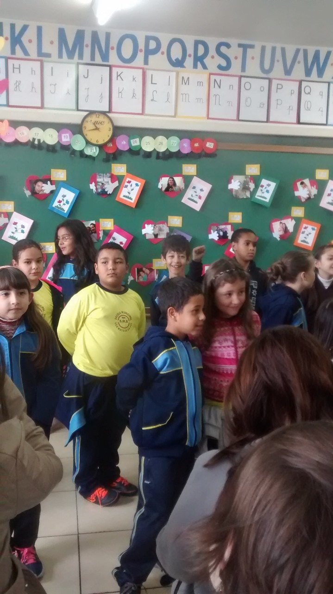

1º Ano do Ensino Médio
aqui as coisas mudaram, eu entrei para a robótica, que me proporcionou várias oportunidades, dentre elas 3 viagens para competições no Brasil inteiro.

time lapse
Aqui começou minha jornada escolar... Naquela época, eu nem fazia ideia do que estava por vir. Eu estudava na São Matheus.
O desafio dessa foto é me achar no meio dessa criançada.
Aqui eu mostro meu corte novo antes de iniciar um novo ano, após mudar para o Maria Neide.
ainda dentuço, mas ansioso para terminar meu último ano na minha escola, eu ainda nem sabia o quão feliz eu era nessa época...
Curiosidade: no meu sexto ano, eu estudei por 2 semanas no Luiz Carlos, pois eu estava na fila para entar no Morelli.
aqui as coisas mudaram, eu entrei para a robótica, que me proporcionou várias oportunidades, dentre elas 3 viagens para competições no Brasil inteiro.

Primeira competição, no Rio de Janeiro, uma das piores fotos minhas, mas a emoção do nosso técnico é impagável.
Em janeiro de 2023, plenas férias, e eu vindo num sábado para montar o robô para a competição que foi em março.
Eu e minha namorada como juízes na Olimpíada Brasileira de Robótica, realizada em agosto, no pavilhão da igreja.
Aqui a prova de que eu realmente estava como juiz, anotando as pontuações das equipes na prancheta.
Mais uma prova, eu julgando um robô, mas tentando manter sem nenhuma expressão, pois o juiz tem que ser neutro.